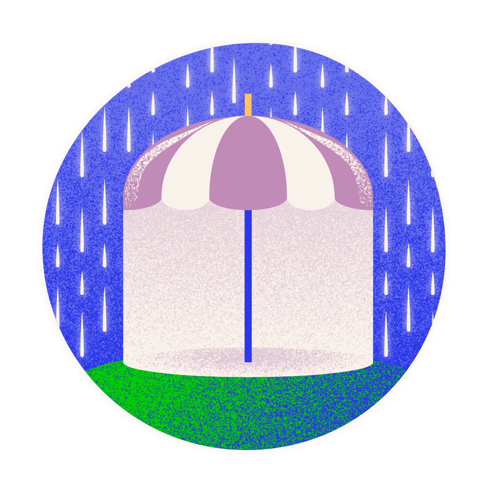

<!DOCTYPE html>
<html lang="en">
<head>
  <meta charset="UTF-8">
  <meta name="viewport" content="width=device-width, initial-scale=1.0">
  <meta http-equiv="X-UA-Compatible" content="IE=edge">
  <link rel="stylesheet" href="style.css">
  <link href="https://cdn.jsdelivr.net/npm/bootstrap@5.0.2/dist/css/bootstrap.min.css" rel="stylesheet" integrity="sha384-EVSTQN3/azprG1Anm3QDgpJLIm9Nao0Yz1ztcQTwFspd3yD65VohhpuuCOmLASjC" crossorigin="anonymous">
  <link rel="preconnect" href="https://fonts.googleapis.com">
  <link rel="preconnect" href="https://fonts.gstatic.com" crossorigin>
  <link href="https://fonts.googleapis.com/css2?family=Poppins:wght@300;400;500&display=swap" rel="stylesheet">
  <title>Salud Mental</title>


<main class="container">
  <nav class="navbar navbar-expand-lg navbar-light bg-light">
    <div class="container">
        <a class="navbar-brand"  href="index.html">
            
        </a>
        <button class="navbar-toggler" data-bs-toggle="collapse" data-bs-target="#mi-menu">
            <span class="navbar-toggler-icon" ></span>
        </button>
        <div class="collapse navbar-collapse" id="mi-menu">
            <ul class="navbar-nav">
                <li class="nav-item">
                    <a class="nav-link" href="ultimasnoticias.html">Últimas noticias</a>
                </li>

                <li class="nav-item">
                    <a class="nav-link" href="neurodivergencias.html">Neurodivergencias</a>
                </li>
                <li class="nav-item">
                    <a class="nav-link" href="lineasdeayuda.html">Líneas de ayuda</a>
                </li>
            </ul>
        </div>
    </div>
</nav>
    <h1>Líneas de ayuda</h1>

    
      
      <ul class="list-group list-group-flush-py-4">
        <li class="list-group-item">Universidad Nacional Autónoma de México</li>
        <li class="list-group-item">Programa de Atención psicológica a distancia.</li>
        <li class="list-group-item">Llamar al: 55 50 25 08 55</li>
        <li class="list-group-item">Horario: Lunes a viernes de 9 a 18 horas</li>
        <li class="list-group-item"><a href="https://www.facebook.com/profile.php?id=100063559932000">Página de Facebook</a></li>
      </ul>

      <ul class="list-group list-group-flush-py-4">
        <li class="list-group-item">Instituto Nacional de Psiquiatría Ramón de la Fuente Muñiz</li>
        <li class="list-group-item">Servicio de hospitalización y consulta externa.</li>
        <li class="list-group-item">Llamar al: 55 4160 5387 y 55 4160 5294</li>
        <li class="list-group-item">Ubicación: Calzada México Xochimilco 101
          San Lorenzo Huipulco, Tlalpan, CDMX
          Entrada para el público en general,
          por la lateral de Periférico Sur.</li>
        <li class="list-group-item"><a href=https://www.inprf.gob.mx/clinicos/indexnew.html>Más información</a></li>
      </ul>
</main>

<footer class="container">
  <p class="float-end"><a href="#">Regresar al inicio</a></p>
  <p>&copy; 2023 Neurosoma. &middot; &middot;
</footer>
<script src="https://cdn.jsdelivr.net/npm/bootstrap@5.0.2/dist/js/bootstrap.bundle.min.js" integrity="sha384-MrcW6ZMFYlzcLA8Nl+NtUVF0sA7MsXsP1UyJoMp4YLEuNSfAP+JcXn/tWtIaxVXM" crossorigin="anonymous"></script>
</body>
</html>